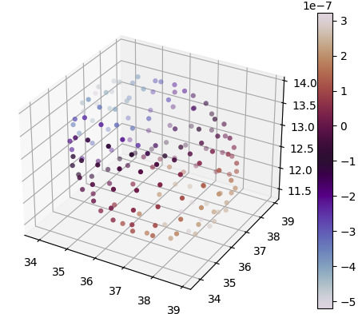
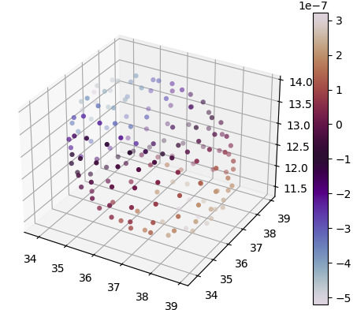

Workshop Series, Randles Lab
![]()
2024-10-11
Discovery

What’s Out There?
- ParaView
- Visit
- NVIDIA Omniverse
- Python-based Visualization
What should I use
- Most of our lab is proficient in ParaView, so I suggest getting good at it over more obscure vis APIs

Types of Visualization
- Post Hoc Visualization
- Save data to disk/storage
- Loaded in to visualization API
- Save images, plots to disk
- In Situ
- Data remains in memory
- Data is passed to visualization API
- Save images, plots to disk
- Notebook visualization
- Load data in to Jupyter notebook
- Utilize vis modules
- Matplotlib
- Etc.
 

ParaView (Kitware)
An open-source (BSD 3 Clause License), scalable, multi-platform visualization application based on VTK
Support parallelism, extreme-scale visualization
Utilities:
- CPU - VTK
- GPU - VTKm


ParaView - Portability
- On the Desktop:
- Post hoc analysis
- Most common method
- Best for small scale data
- On the Web:
- Trame
- VTK.js
- ParaView Glance/Visualizer/Lite
- Remote Work:
- Remotely connect to servers
- Ex: Polaris, Cooley


ParaView - Building Blocks
ParaView utilizes the VTK (the Visualization Toolkit) model as its backbone for data representation
Data is transformed through algorithms, present in ParaView as Filters & Sinks (not common)

ParaView - VTK Data Model

Toolbar

- Houses icons for most of the tools, filters, features etc. that users use
- Some of the most frequently used are:
- Reset Session
- Import File/Open
- Toggle Color Bar
- Alternatively, you can also just find all of these by moving your mouse to the top of your computer and scrolling through
Pipeline Browser

- ParaView handles different objects and filters via a pipeline.
- Pipelines allow users to build off existing objects and filters to continuously create new ones
- Things shown in the pipeline browser include:
- Sources (Data)
- Filters (Data Manipulation)
- Readers
- Extractors
- The pipeline browser indiciates data objects and their individual structures/pipelines
- Filters are formatted with an indentation to mark they are of a pipeline
Properties Browser
- Each object has its own properties that can be updated
- The editable properties depend on the object type but a few of the standard ones include:
- Representation
- Points
- Surface
- Volume
- Coloring
- Parameter to Color By
- Color Bar
- Styling/Lighting
- Opacity
- Specular
- Background
- Representation

Camera Controls

- To interact with an object, you can use the camera controls
- Controls include:
- Zoom To Box
- Set View Direction To (+X,+Y,+Z) and (-X, -Y, -Z)
- Rotate Clockwise and Counterclockwise
- Zoom to Data
- Reset
Some Smaller Things

- Auto Apply, I recommend having it on
- The color bar is highly configurable, explore with different color maps
- MultiView is useful when wanting to compare two different datasets
There’s more in the ParaView guide published online
ParaView: Filters
“Filters are functional units that process the data to generate, extract, or derive features from the data.”
Filters can be applied to sources (data imported) or even other filters to further modify an object. You can see the data flow in your Pipeline Browser
Common Filters:
- Slice
- Clip
- Threshold
- Glyph
- Stream Tracer

Clip/Slice
- Clip is used to extract a portion of an object defined by a plane/shape
- Ex: Remove left-hand portion of a cube
- Ex: Remove all elements to the right of a plane in order to see what’s “inside”
- Slice is used to extract a specific plane
- Ex: Extract fluid fields at the centerline/axial position to inform of hemodynamic metrics there
- Ex: 2D Flow Field Contouring

Threshold


- Thresholding is used to extract specific cells that fall within a predefined range
- Ex: Remove all xlet points
- Ex: Remove all cells of a specific ID
- Highly configurable and criminally underutilized
- Believe you can only threshold based on “Cell Data”
Glyph
- Glyph is used to replace point data with a predefined shape or glpyh.
- The glyphs may be oriented by a vector and scaled by a vector or scalar.
- Useful for both visualization and analysis purposes
- Preferrable when working with cell and fluid data
- Ex: Wendy visualizing fluid flow around a cell
- Ex: Chris visualizing fluid flow around a bifurcation

Stream Tracer Cont.

Load The Dataset In

Add a Clip Filter

Add a Clip Filter Cont.

Color Your Data by ID and Threshold

Adjust Thresholding to Show Only Fluid

Convert to Point Data

Create Streamlines via the Stream Tracer
I’ll let you guys struggle with this one a little bit. I want you guys to get to the point you get a similar looking visualization.

Apply the Tube Filter to your streamlines
- Your streamlines are very thin, so adding a shape-based filter can help make things clearer.
- I want you to again struggle a bit with this, adding a Tube filter.
- Adjust it to match these parameters

Add Glyphs to Visualization pipeline

You guessed it, I want you to struggle a bit more. Now add a Glpyh filter. Once you are done, you should get to a visualization similar to what I have above
Load in Data and Make a Slice
- For this part, I’ll give you a little more freedom
- Load in the data (mbt_for_tutorial.pvd) and make a slice of the data. Visualize only the slice
- For reference, this is what my slice looks like

Animation View
- You’ll see at the top of the ParaView application buttons that look familiar (a Play, Pause, Skip button)
- These are used for animations. The data you loaded in is temporal/time series. If data is loaded in correctly, it enables you to play animations

Time Manager
In newer versions of ParaView, there is no dedicated View for animations. It is now integrated into a new view called “Time Manager”
Opening up the Time Manager view enables us more control over the temporal aspects of our dataset and change how we animate Things
Actually explaining how much you can do is out of the scope of this tutorial and my knowledge but you can explore on your own

Exporting an Animation
Once we want to actually see our animation as it was meant to, find the “Save Animation” option
There are a number of options/settings you can change. For now, just save it with a 1920 x 1080 ratio, at a frame rate of 10, and with the lowest level of compression